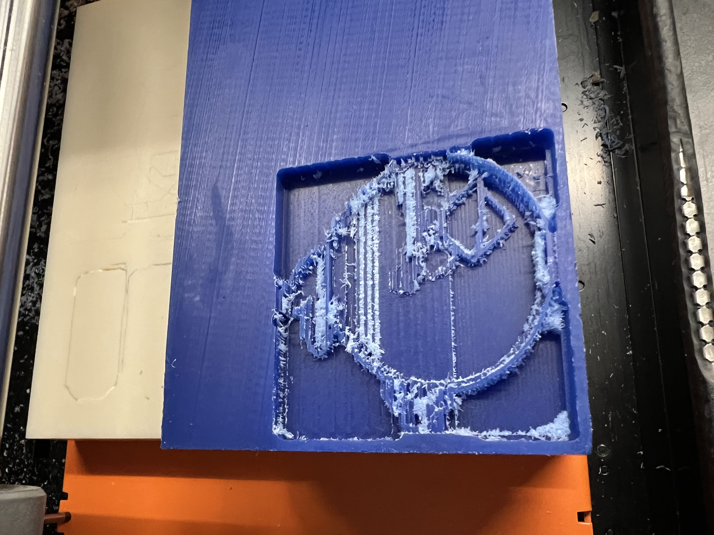
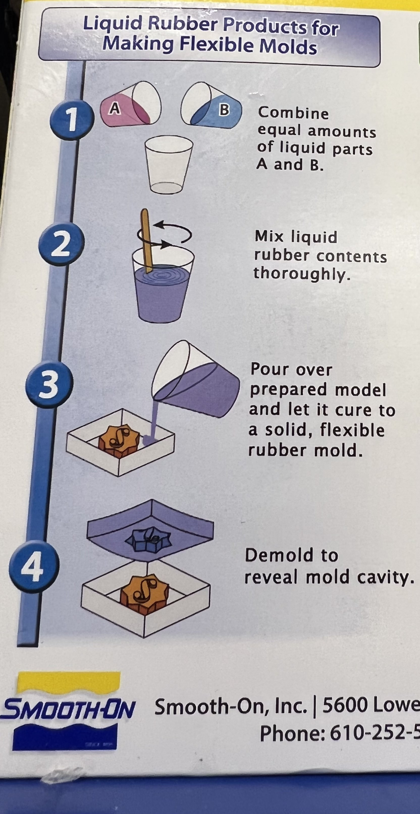
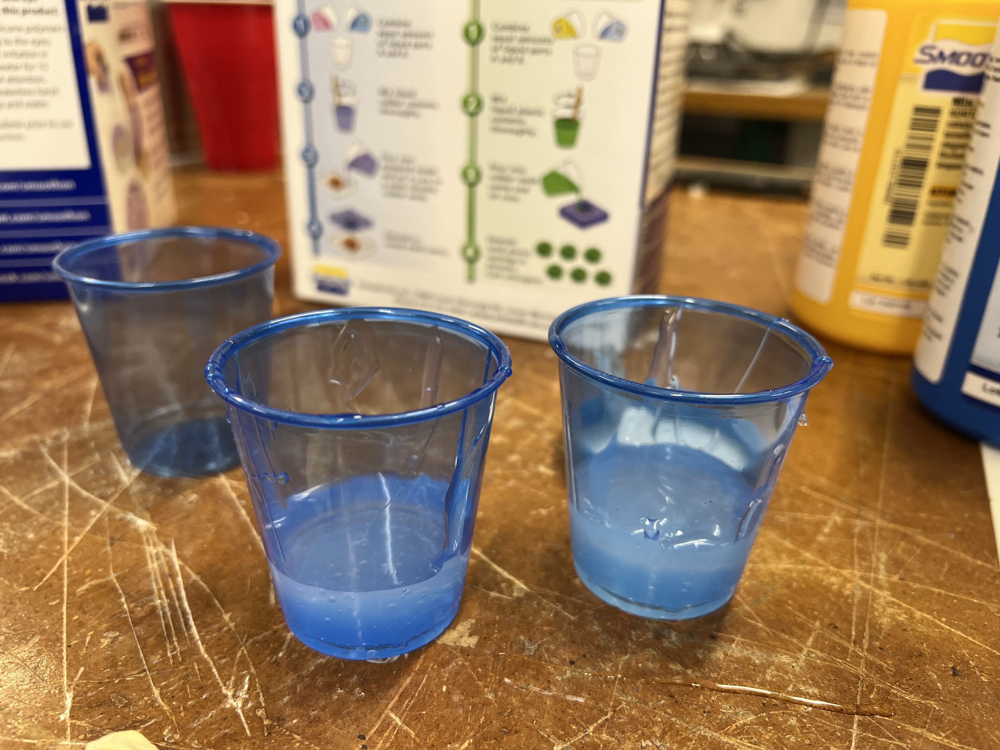
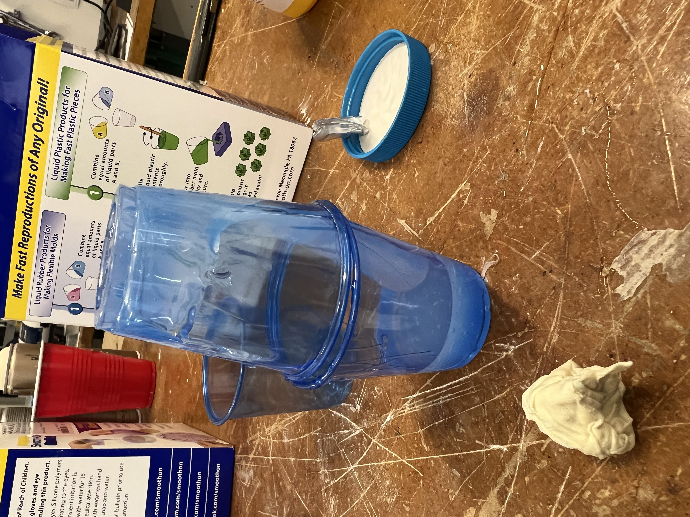
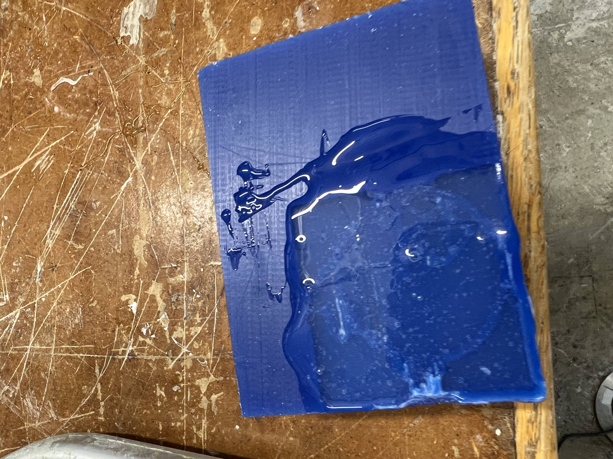
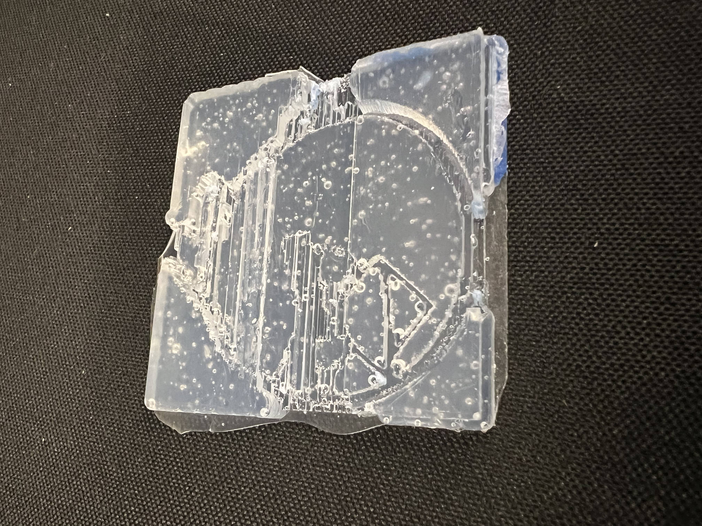

### Week 8: CNC, Molding & Casting
Hello there and welcome to the end of week 9,
For this week's assignment, we had to:
<p> 1. Design something and make it using CNC. You may use the ShopBot (2D outlines), the <a href='https://www.shapertools.com/en-us/'>Shaper</a> (2D outlines) or the SRM-20 (2.5D molds). <br>
2. Create something by molding and casting.
</p>
I decided to water two plants with one hose and create a mold with the CNC machine (I used the monofab machine) and use it to cast my object (Angry bird).
I encountered some problems as in the spirit of starting the assignment early, I, unfortunately, could not make my mold because we could not figure out how to operate the machine. At the end, thanks to Nathan's expertise, I was able to get trained on how to use the machine and create my mold. However, the end result was not satisfying as the pictures here below will show.
I was left with two choices. Either attempt to make the cast with the mold I had and just create a new kind of bird, or re-design the model to incorporate walls around the designs that were taller than the inside features (in order to create more depth) and use a 3D machine instead of the CNC machine to create the mold. However, I knew that in order to make a cast, I had to let it sit for at least 24hours if I wanted to see some good results. That added to other time constraints and the eagerness to get started on the cast made me pick the first choice.
So I went ahead and prepared the mixture for the cast whose instructions I found on the box, and I let my interesting bird sit overnight.
Here below are pictures of the assignment's evolution.
<div class="row">
<div class="column">

</div>
<div class="column">

</div>
<div class="column">

</div>
<div class="column">

</div>
<div class="column">

</div>
<div class="column">

</div>
<a href="angry.stl" download>
Click Here to download the angry bird .stl file.
</a>
Pro tips:
<ul><li> This website: <a href='https://nathanmelenbrink.github.io/ps70/07_cnc/mill.html'>How to make a 2.5D molds</a> has step by step instructions from how to prepare your stl file to making finishing passes. It was very helpful and would highly recommend. </ul> </li>
<ul><li> Another tip is that if after your finishing pass you still have threads of the mold sticking out, it is very helpful to use an air duster to spray the excess out of the mold. That's what I did. Just be wary because the bottle will be freezing cold. </ul> </li>
<ul><li> It is also very useful to create some kind of wall around your actual mold so that your design sits at a lower level compared to the top of the cast. This helps a lot in creating some depth when you're pouring the silicon to make your mold. My bird was very thin because it's mold was not deep enough.</li></ul>
This week shoutout goes to:
<ul>
<li>Kassia during her OH</li>
<li>Nathan for saving the day when he actually explained how to use the monofab machine</li>
</ul>